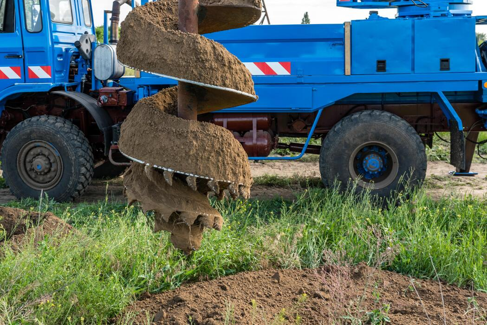

From first site visit to a running tap — every service you need for a reliable private water supply.

Rotary drilling equipment used on our Pretoria East borehole installations.
Site evaluation to find the best drilling point and estimate likely yield. R5,000–R10,000.
Rotary air drilling with casing, priced per metre (R300–R500/m). Most Pretoria East boreholes reach water at 60–90m.
Confirms sustainable extraction rate before you invest in a pump. R1,500–R5,000.
Lab analysis for potability and household suitability. R1,500–R3,000.
Submersible pump sizing, installation and electrical connection matched to your yield and household demand.
Sediment, iron and UV filtration solutions from R2,000, tailored to your water quality test results.
A complete residential package — drilling, casing, pump, yield & quality testing, electrical connection — typically costs R40,000 to R140,000 in Pretoria East depending on depth and equipment.
| Package | Includes | Typical Price |
|---|---|---|
| Basic | Drilling + casing only | R40,000 – R65,000 |
| Standard | Drilling, casing, pump, yield test | R65,000 – R100,000 |
| Full Package | All standard items + quality test, filtration, electrical | R100,000 – R140,000 |
Final pricing depends on depth reached, geology, and equipment selected. Request a free site assessment for an exact quote.